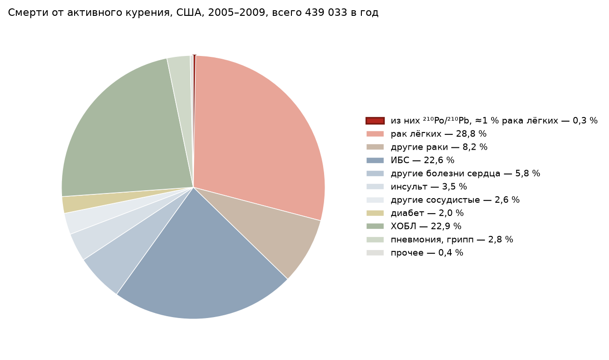

Радиоэкология · естественные радионуклиды · обзор литературы · редакция 4
Содержание в табаке, пути поступления в растение, переход в дым, поведение в дыхательных путях и доза облучения курильщика по первоисточникам 1964–2024 годов. Удельная активность 210Po в сигаретном табаке по измерениям 1960-х и 2000–2020-х годов лежит в одном интервале, 12–25 Бк/кг, в пределах диапазона, измеренного для травянистой фитомассы; устойчивой многолетней тенденции по совокупности работ не установлено; разброс расчётных оценок эффективной дозы порождён главным образом не измеренной активностью, а допущениями о вдыхаемой доле и дозовых коэффициентах.
Автоматизированный анализ. Подготовлен языковой моделью по полным текстам источников, прошёл независимый самоаудит — заявление об использовании ИИ.
Реферат
Объект рассмотрения — природные радионуклиды полоний-210 (210Po) и свинец-210 (210Pb) в табачном сырье, сигаретном дыме и организме курильщика. Актуальность определяется тем, что опубликованные с 1964 года оценки облучения курильщика различаются более чем на три порядка величины, а часть различий порождена не физикой процесса, а несопоставимостью измеряемых величин и различием расчётных допущений. Цель работы — свести по первоисточникам измерения удельной активности, данные о путях поступления изотопов в растение, о переходе в дым и о поведении в дыхательных путях, а также оценки дозы, разведя измеренное и модельное, первоисточник и пересказ.
Рассмотрены прямые измерения 210Po, 210Pb, 226Ra, 228Ra и 228Th в табаке; балансы активности между золой, окурком, фильтром, основным и побочным потоками дыма; две версии поступления изотопов в лист — корневая и атмосферная; данные о содержании в тканях; локальные, средние и эффективные дозы. Выполнено сопоставление с измерениями 210Pb и 210Po в травянистой растительности.
Методы — чтение полных текстов там, где они доступны, и аннотаций в остальных случаях; сопоставление источников без усреднения расхождений; сверка каждой ссылки с содержанием первоисточника; пересчёт единиц, отношений и доз независимым расчётом.
Вывод: удельная активность 210Po в сигаретном табаке большинства изученных марок составляет 12–25 Бк/кг (14–22 мБк на сигарету); значения, полученные в 1960-х и в 2000–2020-х годах, лежат в одном интервале, устойчивой многолетней тенденции по совокупности работ не установлено, а значения до 40–60 Бк/кг относятся к необработанному сырью и отдельным рынкам. Этот интервал находится в пределах диапазона, измеренного для травянистой фитомассы, а отношение 210Pb/226Ra, как правило 2–4, показывает, что свинец поступает в лист независимо от радия почвы. В основной поток дыма переходит 3–36 % активности 210Po в зависимости от марки и режима курения; величины 50–75 % относятся ко всему дыму, включая побочный поток. Эффективные дозы от 210Po и 210Pb для курильщика пачки в сутки, рассчитанные с явными допущениями, 0,06–0,8 мЗв/год, различаются главным образом принятой вдыхаемой долей (0,07–0,75, у части авторов до 1,0) и дозовыми коэффициентами, а не активностью табака. Локальная доза на эпителий бронхиальных бифуркаций — величина иного рода, и её сопоставление с эффективной дозой без оговорки некорректно. Вклад 210Po и 210Pb в смертность, связанную с курением, по трём независимым способам оценки составляет 0,03–4 % с центральным значением порядка 0,2–0,3 %; радон жилищ при 100 Бк/м³ добавляет курильщику примерно в 15 раз больше. Роль фосфатных удобрений остаётся открытой: два контролируемых опыта 1966–1968 годов дали противоположные выводы, а баланс внесения и выпадения при нормах, применяемых под табак, — величины одного порядка.
Ключевые слова: полоний-210, свинец-210, торий-228, радий-226, табак, сигаретный дым, естественная радиоактивность, трихомы, радон-222, фосфатные удобрения, коэффициент перехода, травянистая растительность, эффективная доза, локальная доза
Присутствие 210Po в табаке и его переход в сигаретный дым экспериментально показаны Рэдфордом и Хантом в январе 1964 года [1]. Отклик был немедленным и разноплановым: уже в мае того же года редакционная статья журнала Circulation упоминала полоний среди составляющих дыма, «которые могут иметь значение в генезе рака лёгких у злостных курильщиков» [37]; в декабре 1965 года вышла первая советская работа с прямыми измерениями [4], причём её редакционное послесловие опровергало растиражированную научно-популярным журналом цифру «25 бэр на пачку сигарет» — такая доза, по замечанию редакции, набирается лишь за несколько десятилетий [4]; производители табака, как показали позднее внутренние документы отрасли, к 1968 году подтвердили опубликованные уровни собственными измерениями [15].
С тех пор опубликованы десятки работ, измеряющих активность 210Po и его материнского изотопа 210Pb в табачном сырье, золе, фильтре, дыме и тканях, однако согласованной картины количественного вклада этих изотопов в облучение курильщика не сложилось. Систематический обзор 2019 года констатирует, что данные о содержании радионуклидов в табаке и дыме надёжны, но исследование предмета «в научном отношении стояло на месте последние сорок лет», а часть современных авторов приводит индивидуальные риски примерно в тысячу раз выше, чем допускают международно принятые модели [29]. Часть расхождений объясняется методически: разные работы под одним названием «переход в дым» измеряют разные величины, а под названием «доза» — то локальную тканевую, то среднюю по органу, то эффективную.
Настоящий обзор построен по вопросам, а не по источникам: сколько радионуклидов содержится в табаке (раздел 2); откуда они попадают в лист (раздел 3) и как со временем меняется отношение 210Po/210Pb (раздел 4); что даёт сопоставление с травянистой растительностью, для которой накоплен независимый массив данных (раздел 5); какая часть активности переходит в дым и в какой его поток (раздел 6); что происходит с изотопами в дыхательных путях (раздел 7); как из этих данных получаются оценки дозы и почему они расходятся (раздел 8); какую долю в общем вреде курения составляет облучение и как оно соотносится с радоном жилищ (раздел 9); что известно о позиции отрасли (раздел 10). Расхождения источников не усредняются: значения приводятся с указанием методики и базиса.
Первые измерения 1960-х годов и современные работы дают для сигаретного табака значения одного интервала. Ферри и Баратта (1966, Служба общественного здравоохранения США) для шести типов сигарет получили в среднем 0,43 пКи 210Po на грамм табака (15,9 Бк/кг) и 0,37 пКи на сигарету (13,7 мБк); там же приведено среднее Рэдфорда и Ханта — 0,425 пКи на сигарету (15,7 мБк) при материальном балансе 85 % [28]. Ермолаева-Маковская, Перцов и Попов (1965) для двенадцати отечественных сортов сигарет получили от 3,0 до 5,6·10−13 Ки на сигарету (11–21 мБк), для девяти зарубежных — от 5,0 до 17,8·10−13 Ки (19–66 мБк); средняя концентрация в отечественном сигаретном табаке составила (4,3 ± 1,0)·10−13 Ки/г, то есть 15,9 Бк/кг [4]. По сводке Николовой (1970), в листьях табака США в 1938–1963 годах содержалось в среднем 0,345 и 0,551 пКи/г 210Po (12,8 и 20,4 Бк/кг) по двум сериям измерений; в той же сводке для табачного сырья СССР со ссылкой на Ермолаеву-Маковскую приведено в среднем 1,127 пКи/г (41,7 Бк/кг; от 0,600 до 1,600 пКи/г), для Родезии — 0,754 пКи/г (27,9 Бк/кг) [14]. Внутренние измерения компании Philip Morris к 1968 году дали 0,33–0,36 пКи/г (12–13 Бк/кг) — величину, совпадающую с опубликованной [15].
Современные работы: Бертэ и соавторы (Лозанна, 2022) для тринадцати марок швейцарского рынка — 15,0 ± 2,3 мБк на сигарету, или 25,2 ± 2,6 мБк/г (n = 15; по маркам от 12,7 до 21,2 мБк на сигарету) [2]; Хатер (2004) для десяти марок египетского рынка — 16,3 ± 3,2 мБк на сигарету (21,0 ± 4,0 мБк/г; по маркам 9,7–22,5 мБк) — и, сравнив результат с измерением 1968 года для тех же египетских сигарет (14,1 мБк), заключил, что современные способы обработки табака содержания 210Po не снизили [7]. Скварец и соавторы (2001) для 14 наиболее продаваемых марок польского рынка нашли до 24,1 мБк на сигарету [35]; Хорват и соавторы (2017) для 17 марок, распространяемых в Иране, — от 9,7 ± 1,2 до 26,5 ± 4,6 мБк на сигарету [3]; Джанкурт и Гёргюн (2020) для 16 марок в Турции — от 16,1 до 37,6 мБк при среднем 22,4 ± 1,5 мБк [31]; Ганбар-Могаддам и Фативанд (2020) — в среднем 38,4 мБк/г для иранских и 20,0 мБк/г для импортных сигарет [36]. Сводки: по Хатеру и Скварцу и соавторам, мировые данные лежат в диапазоне 2,8–37 Бк/кг [7], [35]; Перссон и Хольм (2011) приводят среднее по литературе 13 ± 2 Бк/кг и отмечают, что оно «довольно постоянно во времени и по географическому происхождению» [5]; учебник Бекмана приводит для табака 55 Бк/кг без указания источника [27]; обзор Феликса и Нтарисы (2024), охвативший 40 работ 2000–2023 годов, даёт для 210Po среднее 20,4 мБк/г при диапазоне 0,4–128,6 мБк/г, для 210Pb — 15,4 (2,0–78,8) мБк/г, для 226Ra — 5,9 (2,0–16,0) мБк/г [30].
| Источник | Объект | Активность 210Po | Бк/кг, пересчёт |
|---|---|---|---|
| Radford, Hunt, 1964, по [28] | США, среднее | 0,425 пКи/сиг. | — |
| Ferri, Baratta, 1966 [28] | США, сигареты 6 типов, среднее | 0,37 пКи/сиг.; 0,43 пКи/г | 15,9 |
| Ермолаева-Маковская и др., 1965 [4] | СССР, сигаретный табак, среднее | (4,3 ± 1,0)·10−13 Ки/г | 15,9 |
| Ермолаева-Маковская и др., 1965 [4] | Сигареты: 12 отечественных / 9 зарубежных | 3,0–5,6 / 5,0–17,8 ·10−13 Ки/сиг. | — |
| Ермолаева-Маковская и др., 1965 [4] | СССР, табачное сырьё, отечественные сорта | 6,0–16,0·10−13 Ки/г; среднее 11,27·10−13 | 22–59; 41,7 |
| Николова, 1970 [14], сводка | Лист табака, США, 1938–1963, две серии | 0,345; 0,551 пКи/г | 12,8; 20,4 |
| Николова, 1970 [14], сводка | Табачное сырьё, Родезия | 0,754 пКи/г | 27,9 |
| Philip Morris, 1968, по [15] | Внутренние измерения | 0,33–0,36 пКи/г | 12–13 |
| Skwarzec et al., 2001 [35] | Польша, 14 марок, максимум | 24,1 мБк/сиг. | — |
| Khater, 2004 [7] | Египет, 10 марок, среднее | 16,3 ± 3,2 мБк/сиг.; 21,0 ± 4,0 мБк/г | 21,0 |
| Berthet et al., 2022 [2] | Швейцария, 13 марок, n = 15 | 15,0 ± 2,3 мБк/сиг.; 25,2 ± 2,6 мБк/г | 25,2 |
| Horváth et al., 2017 [3] | 17 марок, распространяемых в Иране | 9,7 ± 1,2 … 26,5 ± 4,6 мБк/сиг. | — |
| Cankurt, Görgün, 2020 [31] | Турция, 16 марок | 22,4 ± 1,5 (16,1–37,6) мБк/сиг. | — |
| Ghanbar-Moghaddam, Fathivand, 2020 [36] | Иран: местные / импортные сигареты | 38,4 / 20,0 мБк/г | 38 / 20 |
| Persson, Holm, 2011 [5] | Сводка литературы | 13 ± 2 Бк/кг | 13 |
| Felix, Ntarisa, 2024 [30] | Обзор 40 работ 2000–2023 гг. | 20,4 (0,4–128,6) мБк/г | 20 |
Разброс между марками внутри одной работы достигает нескольких раз (у Ермолаевой-Маковской для зарубежных сигарет — от 5,0 до 17,8·10−13 Ки, в 3,6 раза [4]) и сопоставим с различием между средними разных десятилетий: средние для сигаретного табака 1960-х годов (0,33–0,55 пКи/г, 12–20 Бк/кг) и 2000–2020-х (13–25 Бк/кг) лежат в одном интервале. Выше этого интервала лежит необработанное сырьё: у Ермолаевой-Маковской отечественные сорта сырья содержат 6,0–16,0·10−13 Ки/г (22–59 Бк/кг, в среднем 41,7 Бк/кг) [4], что Николова объясняет распадом 210Po при ферментации и хранении [14]; из сигарет рынка — местные иранские марки (в среднем 38 Бк/кг) [36] и отдельные турецкие марки (до 37,6 мБк на сигарету) [31]. Джанкурт и Гёргюн сообщают о росте содержания 210Po в сигаретах турецкого рынка за последние два десятилетия [31], Перссон и Хольм по сводке литературы — о постоянстве во времени [5]; по совокупности работ устойчивой многолетней тенденции не установлено.
Ферри и Баратта измерили в одних и тех же сигаретах 226Ra, 210Pb, 210Bi и 210Po: на сигарету 226Ra — 0,11–0,17 пКи (4,1–6,3 мБк), 210Pb — 0,33–0,49 пКи (12,2–18,1 мБк; для трёх типов из шести 210Pb принят равным измеренному 210Bi), 210Po — 0,32–0,48 пКи (11,8–17,8 мБк) [28]. Папастефану (2009) гамма-спектрометрией измерил 17 проб табачного листа урожая 1990 года из 15 районов Греции: 226Ra 1,80–7,57 Бк/кг (среднее 3,38), 228Ra 1,10–6,52 (среднее 3,83), 210Pb 6,34–18,2 (среднее 14,12), 40K 273–2080 (среднее 823), 137Cs 1,20–7,00 Бк/кг (среднее 3,40) — против 70–180 Бк/кг 137Cs в листе 1986 года по справке табачной фабрики [11].
Петушков, Зельцер и Медведовский (1972) обратили внимание, что общая альфа-активность табака в 4–5 раз превышает активность одного полония, и эманационным методом определили в четырёх сортах сигарет и папирос 228Th (радиоторий): 0,36–0,55 пКи/г (13–20 Бк/кг), то есть того же порядка, что и 210Po; в пепле выкуренной сигареты оставалось 0,09 пКи [40]. Спустя сорок с лишним лет Кубалек и соавторы (2016) измерили в словенских сигаретах изотопы урана, тория, радия, свинца и полония и оценили, что вклад изотопов тория в эффективную дозу (6, 47 и 37 мкЗв/год от 228Th, 230Th и 232Th, всего 90) превышает вклад пары 210Po + 210Pb (61 + 9 мкЗв/год) [16]. Обзор Феликса и Нтарисы по 40 работам приводит в табаке 232Th 8,1 (0,3–41,0) мБк/г и 238U 15,2 (0,2–82,0) мБк/г, а среднюю годовую дозу от 232Th — 889,7 мкЗв при 295 мкЗв от 210Po [30]. Папастефану указал, что вклад изотопов радия в литературе обычно не учитывается, хотя имеет тот же порядок, что и вклад 210Pb [11]. Таким образом, 210Po — наиболее изученный, но не единственный альфа-излучатель табака.
Вопрос о пути поступления 210Po и 210Pb в лист табака обсуждается с середины 1960-х годов, и первые работы уже содержали обе версии. Ермолаева-Маковская и соавторы (1965) заключили, что имеющийся в сигаретах 210Po находится в равновесии с 210Pb, «освобождающимся на поверхности листьев табака», а 210Pb «образуется в воздухе из радона, эманирующего из почвы» [4]. Бергер, Эрхардт и Фрэнсис (1965) по результатам анализа почвенных вытяжек сделали тот же вывод в осторожной форме: имеются указания, что 210Po или его предшественники поступают не через корни, а путём сорбции на мёртвом влажном растительном материале на границе «атмосфера — растение»; в образцах зелёного листа табака 210Po обнаружить не удалось, тогда как высушенный лист и почвы его содержали [10]. Тсо, Харли и Александер (1966) в опыте с камерой, обогащённой радоном-222, на полях с разными фосфорсодержащими удобрениями и в культуре с 210Pb в питательном растворе пришли к противоположному выводу: основная часть 210Pb в растении, вероятно, поступила через корни, а радон воздуха и его продукты дали много меньше; на конечное содержание 210Po влияли стадия развития листа и способ его сушки [9]. По изложению Ферри и Баратты, Марсден (1964) считал вклад атмосферных выпадений полония малым по сравнению с корневым поступлением [28]; Николова (1970), напротив, отмечает, что отсутствие связи между альфа-активностью травы и почвы «подчёркивает важность внекорневого пути» [14].
Ферри и Баратта нашли отношение активностей 210Pb/226Ra в сигаретах 1,9–4,1 (в трубочном табаке 4,3) и заключили, что 210Pb поступает в табак путём прямого поглощения из почвы и воздуха, а не только как продукт распада радия, содержащегося в самом табаке [28]. Мартелл (1974) сформулировал механизм, ставший впоследствии общепринятым: атмосферный 210Pb сконцентрирован на мелких ядрах Айткена, которые накапливаются на трихомах табака; при сушке табака и сгорании трихом образуются нерастворимые частицы с высокой активностью 210Pb, вдыхаемые курильщиком [13]. Папастефану (2009) отмечает, что около 85 % трихом табачного листа имеют железистые головки, покрытые липким экссудатом, и по итогам собственных измерений разводит нуклиды по происхождению: 210Pb осаждается из воздуха и задерживается трихомами; изотопы радия поступают через корни из почвы либо с удобрениями; 40K — через корни; 137Cs и 134Cs — через корни, поскольку спустя четыре года после аварии на Чернобыльской АЭС они оставались в почве [11]. Перссон и Хольм (2011) различают полоний, поддержанный поглощением из почвы, и неподдержанный, осевший из атмосферы; для облиственных растений уровень 210Po особенно высок вследствие прямого осаждения [5]. Бертэ и соавторы принимают атмосферную версию во введении своей работы [2]; Джанкурт и Гёргюн (2020), помесячно определявшие 210Po в табаке эгейского региона Турции, исходят из захвата аэрозолей липкими трихомами обеих сторон листа; в листе они нашли в среднем 14,1 ± 1,1 Бк/кг сухой массы (от 8,3 в июне до 21,7 в июле), в стебле 7,6, в корне 14,3, в почве 34,4 Бк/кг, коэффициент перехода «почва — лист» 0,22–0,65, и отрицательную связь содержания 210Po в листе с количеством осадков [31]. Ганбар-Могаддам и Фативанд (2020) называют дополнительным источником 210Po сушку табака в прямом контакте с дымовыми газами ископаемого топлива [36].
Роль фосфатных удобрений в рассмотренных источниках общепринятой не является. По данным Агентства по охране окружающей среды США, удельная активность 226Ra в фосфатных удобрениях составляет приблизительно 0,185–1,11 Бк/г (5–30 пКи/г) в зависимости от состава смеси; при переработке фосфатного сырья около 80 % 226Ra концентрируется в фосфогипсе [12]. Папастефану приводит для фосфатных удобрений 238U 312–936 Бк/кг, 226Ra 19–1129 Бк/кг, 40K 53–6370 Бк/кг [11]. Дзага и соавторы (2011) относят удобрения к основным источникам «по данным ряда исследований» и, по внутреннему документу отрасли 1980 года, указывают, что рекомендация Мартелла заменить кальций-фосфатные удобрения аммоний-фосфатными была известна производителям и признана «дорогостоящей» (an expensive point) [8]. Краткий обзор Дзаги, Каттаруццы и Галлуса (2024) выстраивает пути в иерархию: основной — осаждение продуктов распада радона-222 на лист с захватом трихомами; меньшая доля — корневое поглощение; дополнительный — удобрения из сырья, богатого ураном [38].
Контролируемых опытов на самом табаке два, и они дали противоположные выводы. Тсо, Харли и Александер (1966) измерили в коммерческом фосфорсодержащем удобрении, применявшемся под табак, 13,4 ± 0,6 пКи/г 226Ra и 6,72 ± 0,14 пКи/г 210Po (496 и 249 Бк/кг), а в специально приготовленной смеси из чистых реактивов — 0,95 и 1,05 пКи/г; при внесении удобрения состава 4-8-12 в дозе 1560 кг/га наблюдалось «явное увеличение» активности 210Po в почве и в табаке; в камере с воздухом, обогащённым радоном-222, лист набрал заметно меньше, чем при корневом снабжении, и авторы заключили, что основная часть 210Pb в растении «вероятно, поглощена через корни» [9]. В продолжении той же серии Тсо, Стеффенс, Ферри и Баратта (1968) нашли в почвах табачных районов и в удобрениях, доступных для табаководства, широкий разброс 226Ra, 210Pb и 210Po и заключили, что радиоэлементы удобрения одного сезона «могут не повлиять на уровень в ближайшем урожае, но вносят вклад в накопление в почве» [42]; Тсо и Фисенн (1968) показали, что 210Pb, нанесённый на лист, в другие части растения не перемещается, тогда как при корневом снабжении оба нуклида распределяются по тканям, и что если осадки и вносят вклад, «основной путь поступления, вероятно, должен идти через корневое поглощение» [44]; опыт Тсо, Карра, Ферри и Баратты (1968) о сортах и способах сушки приводится по аннотации [43]. Фрэнсис, Честерс и Эрхардт (1968), работавшие в Висконсине, как и авторы работы [10], выращивали табак, кукурузу, райграс, фасоль и горох в теплице на почвах с добавкой 100 мг/кг фосфора в виде моноаммонийфосфата либо фосфоритной муки (rock phosphate), в которой, по цитируемой ими оценке, содержится до 350 мг/кг урана (260 пКи/г), а также в поле [41]. В листе тепличного табака 210Po составил 0,04 ± 0,04 пКи/г при моноаммонийфосфате, 0,05 ± 0,04 и 0,04 ± 0,04 пКи/г при фосфоритной муке (через 80 и 341 сут после уборки) и 0,04 ± 0,04 пКи/г без добавки фосфата, то есть на уровне предела обнаружения; полевой табак того же опыта содержал 0,02 ± 0,04 пКи/г при уборке и 0,56 ± 0,07 пКи/г через 186 сут (врастание из 210Pb), а полевые образцы листа в целом — 0,34–1,50 пКи/г [41]. Авторы заключили, что возможность корневого поглощения 210Pb из почвы как основного механизма поступления 210Po в растения «была оценена и оказалась несостоятельной», прямое поглощение 210Pb из почвы «не является существенным механизмом поступления в растения», а источником служит 210Pb атмосферных осадков [41]. Различие в выводах серий 1966–1968 годов не устранено последующими измерениями: греческие [11], турецкие [31], польские [65] и сводные [5] данные получены без контролируемого варьирования удобрения; Скварец и соавторы (2001) по распределению 210Po между частями растения заключили, что полоний поступает в табак «из сухих или влажных выпадений на растение» [65].
Дальнейшие измерения относятся к почве и к долгоживущим предшественникам, а не к 210Pb и 210Po листа. Мвалонго и соавторы (2023) на полях Танзании, Кении и Уганды нашли в NPK-удобрениях на местном фосфорите до 3216 ± 22 Бк/кг 238U, а в почве под этим удобрением — статистически значимо больше 238U, чем в контроле (30,6 ± 1,3 Бк/кг); 210Pb и 210Po в этой работе не измерялись, в листе определены только 238U, 232Th и 40K [45]. По сводке МАГАТЭ, в разрабатываемых осадочных фосфоритах радионуклиды ряда 238U содержатся в количестве около 0,5–3 Бк/г, тогда как в магматических (апатитовых) рудах — около 0,1–0,2 Бк/г при повышенном ряде 232Th (0,1–0,4 Бк/г); внесение фосфогипса с 0,51 Бк/г 226Ra в дозах 13 и 26 т/га не изменило содержания 226Ra в урожае и не привело к накоплению активности в почве, а в тепличном опыте с томатами при дозах до 20 т/га 238U и 226Ra в урожае были ниже предела обнаружения, 210Po — 0,4–0,7 Бк/кг сухой массы [46]. Лаурия и соавторы (2009) не нашли различий по радию и урану между овощами органического и обычного земледелия [48]. Индийские опыты с табаком при разных удобрениях (диаммонийфосфат, суперфосфат, мочевина, поташ, сульфат цинка) показали зависимость плотности альфа-треков листа от вида удобрения и рост со временем, без разделения по нуклидам [49], [50]. Борыло, Скварец и Вечорек (2022) для крупнолистных растений, включая табак, называют главным путём прямое осаждение 210Po и 210Pb на поверхность листа, а поступление из фосфатных удобрений относят к клубнеплодам [47]. У самого Папастефану формулировки различаются по разделам одной статьи: в результатах изотопы радия отражают корневое поглощение из почвы, «а не из удобрений», в заключении — поступают «либо через корни, либо с удобрениями» [11].
Внутренние документы отрасли, на которые опираются Дзага и соавторы [8], доступны в архиве Truth Tobacco Industry Documents. Меморандум Lorillard от 5 сентября 1975 года излагает гипотезу Мартелла: пыль кальций-фосфатного удобрения ответственна за спекание трихом в высоконерастворимые частицы дыма, и предлагает перейти на аммоний-фосфатное удобрение [51]. Записка Philip Morris от 2 апреля 1980 года содержит фразу, процитированную в [8]: рекомендация использовать аммоний-фосфат вместо кальций-фосфата — «вероятно, верное, но дорогостоящее соображение» (probably a valid but expensive point) [52]. Патент США 4 194 514 от 25 марта 1980 года (Stauffer Chemical) описывает удаление радиоактивных свинца и полония обработкой листа до сушки разбавленным раствором кислоты [53]. Утверждение Дзаги и соавторов, что американский табак в 5,5 раза активнее индийского (19,09 против 3,33 мБк/г) «вследствие полифосфатных удобрений», снабжено в их списке литературы двумя номерами ссылок, ведущими к одной работе — измерениям Сингха и Нилекани (1976) на индийском табаке [8], [54]; в том же обзоре та же ссылка подкрепляет другое соотношение, «в 6–15 раз» [8]. По доступному изложению, работа Сингха и Нилекани содержит измерения индийских изделий (0,07–0,10 пКи/г в сигаретах), но не сравнение с американским табаком и не вывод о его причине [54]; различие уровней между странами само по себе не указывает на удобрения и объяснимо в том числе климатом и выпадениями 210Pb.
Порядок величин можно оценить по балансу. Нормы внесения фосфора под табак в США составляют, по руководству Виргинского политехнического университета, 40 фунтов P2O5 на акр (45 кг/га) на почвах со средней и высокой обеспеченностью фосфором и до 230 фунтов на акр (258 кг/га, из 500 фунтов тройного суперфосфата) на бедных [55]; для табака берли Северной Каролины — 40–50 фунтов P2O5 на акр [56]; в опыте Тсо и соавторов удобрение 4-8-12 вносилось в дозе 1560 кг/га [9]. При 100–560 кг/га тройного суперфосфата и 0,185–1,11 Бк/г 226Ra [12] одно внесение приносит 2–62 Бк/м² радия; удобрение опыта Тсо (496 Бк/кг 226Ra, 249 Бк/кг 210Po) при 1560 кг/га — 77 Бк/м² радия и 39 Бк/м² полония. Годовое атмосферное выпадение 210Pb по сводке Борыло и соавторов составляет 50–500 Бк/м² [47], по глобальной базе Чжана и соавторов (2021) — 1–2539 Бк/м² с максимумами в средних широтах Северного полушария [57]. Величины одного порядка, и по балансу вклад удобрений отброшен быть не может. Однако радий удобрения переходит в 210Pb листа не прямо: через корни при коэффициентах перехода 0,1–0,3 (раздел 5) либо через эманацию радона из почвы и осаждение его продуктов распада на лист; 210Po удобрения распадается с периодом 138 сут. Баланс поэтому не даёт оснований считать удобрения основным источником; прямой опыт [41] и данные по травянистой растительности (раздел 5) указывают на атмосферный путь как преобладающий, тогда как серия Тсо [9], [42], [44] — на корневой. Ответ, по-видимому, зависит от местных условий: типа и дозы удобрения, содержания радия в почве и уровня выпадений в данном регионе.
Период полураспада 210Po (138,4 сут) мал по сравнению с периодом 210Pb (22,2 года), поэтому после уборки листа активность 210Pb практически постоянна, а отношение активностей релаксирует к единице по закону R(t) = 1 + (R0 − 1)·e−λt, где R0 — отношение при уборке, λ — постоянная распада 210Po. Расчёт по этой формуле даёт для R0 = 0,32 значения 0,72, 0,89 и 0,98 через 180, 365 и 730 сут; для R0 = 1,54 — 1,22, 1,09 и 1,01.
Измерения на табаке этому соответствуют. Ферри и Баратта описали эффект прямо: в трубочном табаке 210Pb и 210Po не находились в равновесии (0,41 и 0,20 пКи/г, отношение 0,49; 210Pb принят равным измеренному 210Bi), что авторы объяснили поступлением табака в продажу до установления равновесия, тогда как выдержка сигаретного табака около двух лет позволяет 210Pb и его дочерним 210Bi и 210Po прийти в равновесие; в тех сигаретах, где измерены все три изотопа (три типа из шести), их активности совпали в пределах погрешности [28]. Хатер указывает, что между уборкой листа и производством сигарет проходит, как правило, более двух лет — по его оценке, 6–7 периодов полураспада 210Po (два года соответствуют 5,3 периода), — и полоний приближается к вековому равновесию со свинцом [7]; Бертэ и соавторы измерили в сигаретах швейцарского рынка отношение 1,06 ± 0,05 [2]. Николова, напротив, объясняла меньшее содержание 210Po в готовых изделиях по сравнению с листом распадом полония при ферментации и складской выдержке [14] — это возможно только для листа, в котором при уборке полоний был в избытке над свинцом (R0 > 1), как в словенском силосе (раздел 5).
Практическое следствие: активность 210Po в выкуриваемом табаке определяется активностью 210Pb, накопленного листом за время роста, а не содержанием полония в момент уборки. Отсюда же следует, что для оценки облучения курильщика 210Pb важен не менее полония: он определяет и активность 210Po в сигарете, и — через нерастворимые частицы дыма — врастание полония уже в тканях (раздел 7).
Табачный лист — надземная облиственная фитомасса однолетнего растения. Для такой фитомассы (фураж, сено, силос, дикорастущее лекарственное сырьё) существует массив измерений 210Pb и 210Po, полученный вне связи с проблемой курения. Сопоставление выполнено по пяти признакам: уровень удельной активности, отношение 210Po/210Pb, путь поступления, роль радия в почве, прочность связи осевшего свинца. Выводы раздела — интерпретация настоящего обзора, а не утверждения цитируемых работ.
| Объект | Регион | Нуклид | Бк/кг | Источник |
|---|---|---|---|---|
| Лист табака до производства сигарет, урожай 1990 г. | Греция, 15 районов | 210Pb / 226Ra | 14,1 (6,3–18,2) / 3,4 (1,8–7,6) | [11] |
| Лист растущего табака, помесячно | Турция, Маниса | 210Po | 14,1 ± 1,1 (8,3–21,7) | [31] |
| Табачный наполнитель | Швейцария | 210Po | 25,2 ± 2,6 | [2] |
| Сигаретный табак | СССР | 210Po | 15,9 | [4] |
| Сигаретный табак | США | 210Po | 15,9 | [28] |
| Табак, сводка литературы | — | 210Po | 13 ± 2 | [5] |
| Фураж (трава) | Бразилия, плато Посус-ди-Калдас | 210Pb / 226Ra | 26 ± 2 (9,4–83) / 8,2 ± 3 | [18], по [24] |
| Сено | Словения, Жировски-Врх | 210Pb / 210Po / 226Ra | 14,4 ± 0,9 / 4,54 ± 0,19 / 0,60 ± 0,04 | [19], по [24] |
| Силос | Словения, Жировски-Врх | 210Pb / 210Po / 226Ra | 14,7 ± 0,9 / 22,6 ± 0,85 / 1,28 ± 0,08 | [19], по [24] |
| Дикорастущее лекарственное сырьё, 13 видов (максимумы — лист берёзы) | Украина | 210Pb / 210Po | 0,44–28,4 / 2,28–37,7 | [20] |
| Лекарственные травянистые растения | Индия, прибрежная Карнатака | 210Pb / 210Po | 12,0–406 / 3,3–63,7 | [21] |
| Трава, районы с большими осадками, по [14] | Англия и Уэльс (Hill, 1960) | 210Po | свыше 370 (свыше 10 000 пКи/кг) | [14] |
Удельная активность 210Po в сигаретном табаке (12–25 Бк/кг) лежит внутри широкого диапазона травянистой фитомассы — от долей до сотен беккерелей на килограмм — и близка к значениям для бразильского фуража и словенского сена (14–26 Бк/кг 210Pb); для кукурузного силоса и люцерны с фосфатных глинистых почв (Staples и соавторы, 1994) сводка [24] приводит значительно меньшие значения 210Pb, 0,52–1,04 Бк/кг сухой массы. Наиболее прямое сопоставление даёт табачный лист, измеренный до ферментации и производства сигарет: 210Pb в греческом листе в среднем 14,1 Бк/кг [11], 210Po в растущем турецком — 14,1 ± 1,1 Бк/кг [31] — практически то же значение, что 210Pb в словенском сене и силосе (14,4 и 14,7 Бк/кг [19]). Для объяснения этого уровня механизм накопления, присущий только табаку, не требуется.
В свежеубранной фитомассе 210Po и 210Pb не находятся в равновесии: в словенском сене отношение активностей составляет 0,32, в силосе — 1,54 [19]. По формуле раздела 4 оба значения за два года выдержки приходят к 0,98–1,01 — тому же отношению, что измерено в сигаретах (1,06 ± 0,05 [2]) и предсказано выдержкой сигаретного табака около двух лет [7], [28]. Неравновесие трубочного табака (0,49 по 210Bi [28]) соответствует, по той же формуле, выдержке порядка двух месяцев при R0 ≈ 0,3, характерном для сена.
Для травянистой растительности источники указывают на преобладание атмосферного пути. По Бекману, основной путь загрязнения растительности 210Pb — отложение на надземные части с аэрозолями (около 85 %), корневой путь — около 15 %, а содержание 210Pb в траве определяется количеством осадков, а не содержанием в почве [27]. По Бахуру и соавторам, на долю корневого поступления приходится до 20 % 210Po и до 14 % 210Pb; 210Pb накапливается преимущественно в верхних, молодых надземных частях, а в корнях голубики и багульника полония в 2–3 раза и свинца в 3–4 раза меньше, чем в надземной части [26]. Петшак-Флись и Сковроньска-Смоляк (1995) в опыте с открытым полем и плёночным укрытием нашли, что в надземных частях растений на открытом поле активность 210Pb и 210Po выше, чем под укрытием, а в корнях практически одинакова; перенос через корни авторы оценивают как пренебрежимый, а основным источником называют атмосферные, преимущественно влажные, выпадения [23]; по сводке Перссона (2013), коэффициент перехода выпадений для травы и облиственных растений составляет 0,5–1 (Бк/кг растения на Бк/м² выпадений), для малооблиственных растений и соломы 0,1–0,5, для зерна и корнеплодов — менее 0,2 и менее 0,003, а для 210Po примерно втрое выше, чем для 210Pb [24]. Йованович (2011) на хвостохранилищах бывшего уранового рудника Жировски-Врх нашёл, что измеренная активность 210Pb в траве до 100 раз выше рассчитанной по содержанию в почве, и объяснил это осаждением продуктов распада радона-222 из воздуха [22].
Лист табака широк и густо покрыт железистыми трихомами [11], то есть по свойствам поверхности предположительно перехватывает атмосферные частицы не хуже травы. По аналогии данные по травянистой растительности поддерживают атмосферную версию [2], [4], [5], [10], [13] и не согласуются с выводом Тсо и соавторов [9]. Аналогия, однако, результат контролируемого опыта не опровергает: прямых парных измерений на табаке по схеме «открытое поле — укрытие» в рассмотренных источниках не найдено, а опыт Тсо и соавторов с камерой, обогащённой радоном, — единственный контролируемый опыт на самом табаке.
По справочнику МАГАТЭ (Серия технических докладов № 472), средний коэффициент перехода «почва — растение» для стеблей и побегов культурных трав (категория Grasses) в умеренном климате составляет 0,31 для свинца (N = 17) и 0,13 для радия (N = 62), для пастбищной растительности — 0,092 для свинца, 0,12 для полония (N = 10) и 0,071 для радия [25]. Коэффициент «почва — лист» для 210Po в табаке, 0,22–0,65 [31], того же порядка. При таких значениях корневое поступление из почвенного радия ограничено, и повышение содержания радия в почве за счёт удобрений предположительно сказывается на 210Pb и 210Po листа главным образом через эманацию радона из почвы и осаждение его продуктов распада на лист. Случай хвостохранилища [22] показывает этот механизм в крайнем проявлении: радий подложки влияет на 210Pb травы через воздух, а не через корень.
В парных измерениях фуража и сена отношение 210Pb/226Ra составляет 3,2 [18], 11,5 и 24 [19] (по [24]), тогда как в почве под бразильским фуражом 210Pb и 226Ra близки (104 и 135 Бк/кг [24]), то есть 210Pb в надземной фитомассе многократно превышает уровень, поддерживаемый радием самой пробы. В сигаретах это отношение составляет 1,9–4,1, в трубочном табаке 4,3 [28], в греческом табачном листе до производства — в среднем 4,2 (14,1 и 3,4 Бк/кг) [11]: тот же знак неравновесия и тот же порядок, что у фуража. Отсюда следует, что 210Pb в табаке нельзя оценивать по содержанию 226Ra в листе или почве; это согласуется с выводом Папастефану о корневом происхождении радия в табачном листе [11].
По сводке Перссона (2013), после тщательной отмывки в растении остаётся 82 ± 20 % атмосферно осевшего 210Pb и 60 ± 20 % поступившего корневым путём [24]. Данные по табаку с этим согласуются с неожиданной стороны: по внутренним документам Philip Morris середины 1970-х годов, отмывка листа неполярными растворителями снижала его радиоактивность на 10–40 %, а по показаниям бывшего сотрудника компании, смыть удавалось около половины — «другая половина была внутри табака» [15]. Осевший на лист 210Pb не является легко удаляемым поверхностным загрязнением ни у травы, ни у табака.
В литературе под общим названием «переход в дым» приводятся разные величины: доля активности в основном (вдыхаемом) потоке; доля во всём дыме, включая побочный поток, уходящий в воздух между затяжками; доля, не оставшаяся в золе, окурке и фильтре, — она зависит от того, докуривается ли сигарета до фильтра. Кроме того, процент рассчитывается то от активности всей сигареты, то от активности дыма. Числа разных базисов между собой не сопоставимы, и в таблице 3 они сведены по компонентам баланса.
| Источник | Метод | Зола | Окурок | Фильтр | Основной поток | Побочный поток | Весь дым |
|---|---|---|---|---|---|---|---|
| Radford, Hunt, 1964, по [14] | — | 9 | 29 | 8 | — | — | 50 |
| Rajewsky, Stahlhofen, по [14] | — | 14 | 36 | — | — | — | 50 |
| Ferri, Baratta, 1966 [28], марка B без фильтра | установка авторов, 10 затяжек по 3 с, сверена по остаткам сигарет курильщиков | 46,7 (зола + окурок) | — | 22,2 | 24,5 | 46,7 | |
| Ferri, Baratta, 1966 [28], марка C с фильтром | то же | 38,8 (зола + окурок) | 13,7 | 15,1 | 32,9 | 48,0 | |
| Ferri, Baratta, 1966 [28], марка D | то же | — | — | 18,1 | — | — | |
| Ferri, Baratta, 1966 [28], марка E | то же | 50,3 (зола + окурок) | — | 11,0 | 40,8 | 51,8 | |
| Ferri, Baratta, 1966 [28], марка F | то же | 32,2 (зола + окурок) | 8,8 | 30,7 | 32,4 | 63,1 | |
| Berthet et al., 2022 [2], Camel Filter | режим Health Canada Intense, 11 затяжек по 55 мл | 19,0 | — | 19,0 | 13,3 | 49,0 (по разности) | 62 |
| Berthet et al., 2022 [2], среднее по 24 опытам | то же | ≈20 | — | ≈20 | 13,6 ± 4,2 | ≈50 (по разности) | — |
| Khater, 2004 [7], среднее по 10 маркам | сигареты выкурены добровольцами; дым — по разности | 20,7 | — | 4,6 | — | — | 74,7 |
| Ермолаева-Маковская и др., 1965 [4] | сигареты выкурены; зола и фильтр измерены | ≈5 | — | 16–18 | — | — | — |
Основной поток. Ферри и Баратта на установке собственной конструкции, сверенной по остаткам сигарет трёх курильщиков, получили для вдыхаемого дыма от 11,0 до 30,7 % активности всей сигареты в зависимости от марки (в резюме работы — до 35,7 %) при материальном балансе 93–104 % [28]. Бертэ и соавторы на курительной машине в режиме интенсивного курения получили 13,6 ± 4,2 % для 210Po (n = 24; для трёх марок, приведённых в таблице работы, 9,4–15,6 %) и 7 % для 210Pb [2]; Хорват и соавторы — 15 ± 10 % при разбросе по маркам 3–36 % — и указали, что серийные курительные машины не пригодны для количественного улавливания 210Po [3]. Кубалек и соавторы, собирая дым, выдыхаемый воздух, золу и окурки добровольцев, нашли, что в организме курильщика задерживается около 22 % 210Po сигареты [16]. Во введении работы Хатера со ссылкой на Рэдфорда и Ханта (1964) и Муссало-Раухамаа и Яакколу (1985) приведено, что в основном потоке обнаруживается 6,5–22 % 210Po сигареты, у других авторов — от 3,7 до 58 %, а по Парфёнову (1974) в среднем около 50 % 210Po переходит в дым, 35 % остаётся в окурке и около 15 % — в золе [7]; те же диапазоны воспроизводят Дзага и соавторы [8]. Келли (1965), выкуривая одиннадцать марок в стандартном режиме, нашёл, что содержание 210Po в основном потоке связано не с наличием или конструкцией фильтра, а с количеством твёрдых частиц в дыме [34].
Весь дым. Величина «50 % в дым», восходящая к Рэдфорду и Ханту и воспроизведённая Раевским и Штальхофеном и Парфёновым [7], [14], относится, как видно из таблицы 3, к сумме основного и побочного потоков при отдельно учтённом окурке: у Ферри и Баратты сумма потоков составляет 47–63 %, у Бертэ и соавторов — около 62 % (побочный поток — по разности). Доля 74,7 % у Хатера получена по разности между активностью табака с бумагой и активностью золы с фильтром после выкуривания сигарет добровольцами и включает всё, что не осталось в золе и фильтре; автор оговаривает зависимость результата от манеры курения и от активности невдыхаемого побочного дыма [7]. Кажущийся разброс «от единиц до 75 %», встречающийся в обзорной литературе, в значительной мере порождён смешением этих базисов.
| Источник | Величина | Значение |
|---|---|---|
| Ferri, Baratta, 1966 [28] | Доля активности сигареты в фильтре, марки C и F | 13,7; 8,8 % |
| Ferri, Baratta, 1966 [28] | Поступление в основной поток у сигарет с фильтром относительно сигарет без фильтра | 58,5 % (целлюлозный), 45,1 % (с углём) |
| Ермолаева-Маковская и др., 1965 [4] | Доля 210Po дыма, задержанная фильтром | ≈17 % |
| Berthet et al., 2022 [2] | Доля активности сигареты, задержанная фильтром | 18–20 % |
| Khater, 2004 [7] | Доля активности, оставшаяся в фильтре после курения | 4,6 % |
| Philip Morris, 1976, по [15] | Удаление 210Po из дыма ацетатцеллюлозным фильтром | 40–50 % |
| R. J. Reynolds, по [15] | Снижение 210Po и твёрдых частиц турмалиновым фильтром | ≈30 % |
| Николова, 1970 [14], по Radford, Hunt | Задержка фильтром | 8 % |
Ермолаева-Маковская и соавторы заключили, что фильтры «практически не задерживают» 210Po, а со смолистыми веществами связано лишь около 20 % сорбированного фильтром полония [4]; Хатер оценил эффективность фильтра как «весьма низкую» [7]. Николова отметила, что меньшее содержание 210Po во вдыхаемом дыме сигарет с фильтром ещё не означает значительного защитного эффекта [14]. Внутренние исследования отрасли дали для ацетатцеллюлозного фильтра 40–50 % удаления полония из дыма, но не «заметных количеств» нерастворимой фракции; ионообменные и медьсодержащие фильтры оказались неэффективны [15].
Бертэ и соавторы при равномерном нагреве табака в диапазоне 50–600 °C нашли, что половина 210Po теряется уже при 255,9 ± 2,2 °C, тогда как для 210Pb та же доля теряется при 531 ± 17 °C; при 300 °C уходит около 80 % полония [2]. Различие летучести, по оценке авторов, может отчасти объяснять, почему в основной поток переходит 13,6 % 210Po и лишь 7 % 210Pb, и почему в самом дыме изотопы не равновесны: поддержанная свинцом доля полония в основном потоке составила в среднем 52 ± 16 % при разбросе 38–83 % между опытами [2]. Ермолаева-Маковская и соавторы, экстрагируя фильтры эфиром, установили, что 210Po «практически не связан с продуктами сухой перегонки табака» [4]; Келли связал его с массой твёрдых частиц [34]; Мартелл и Рэдфорд — с нерастворимыми частицами из спёкшихся кончиков трихом, обогащёнными 210Pb, с которых полоний при горении уходит [13], [32].
Для нагреваемого табака (IQOS Heets, отдельный продукт) Бертэ и соавторы получили переход в основной поток 1,8 ± 0,3 % 210Po и около 1,5 % 210Pb при содержании 210Po в стике 23,7 ± 2,1 мБк/г — таком же, как в сигаретах; 78 % активности оставалось в неизрасходованном табаке [2]. Различие объясняется не специальными мерами производителя, а тем, что до целевой температуры 330 °C прогревается лишь около 15 % табака в стике; при равномерном нагреве до 300 °C высвобождалось бы около 80 % 210Po [2], [6], [38]. Авторы оговаривают, что меньшая доза не означает меньшей опасности, поскольку расчёт не учитывает привычки курильщика и возможного увеличения потребления [6].
Аэрозоль сигаретного дыма имеет диаметр частиц около 300 нм [17]; по измерениям Десоржера и соавторов, 92 % 210Po основного потока задерживается фильтром с порами 0,8 мкм, а медиана распределения по размерам, принятая в их модели, составляет 0,43 мкм [6]. Как у шахтёров, облучённых радоном, так и у курильщиков 75 % опухолей лёгких обнаруживаются в ветвящихся дыхательных путях бронхиального дерева и 15 % — в газообменной зоне [17]. Отложение в бронхиальной области, по расчёту Десоржера и соавторов, составляет около 13 % вдыхаемой активности — заметно больше, чем в стандартных моделях МКРЗ [6].
Литтл, Рэдфорд, Маккомбс и Хант (1965) измерили 210Po в тканях лёгких курильщиков и некурящих; по изложению позднейших работ, наибольшие локальные концентрации обнаружены в бронхиальном эпителии сегментарных бифуркаций, «где часто возникают бронхогенные карциномы» [15], [33]. Десоржер и соавторы отмечают, что за шестьдесят лет это остались единственные измерения локализации 210Po в бронхах умерших курильщиков, и в отсутствие таких данных дозиметрия вынуждена опираться на общие модели [6]. Мартелл (1974) и Рэдфорд и Мартелл (1975) связали локальное накопление с нерастворимыми частицами, обогащёнными 210Pb: полоний при горении из них уходит и заново врастает после вдыхания, поэтому отношение 210Po/210Pb в частицах служит часами; по предварительным данным на трёх курильщиках и двух некурящих время пребывания частиц в бронхиальном эпителии составило 3–5 месяцев, причём авторы считают оценку заниженной [13], [32].
Средние концентрации в органах приведены в таблице 5. У Ферри и Баратты 210Po в паренхиме лёгких курильщиков втрое выше, чем у некурящего, в лимфатических узлах лёгких — в 2,8 раза, в печени — в 2,4 раза, при малых выборках, позволяющих, по словам авторов, показать только тенденцию [28]. Доклад НКДАР ООН 2000 года констатирует, что концентрация 210Po в лёгочной паренхиме курильщиков приблизительно втрое выше, чем у некурящих [17]; по внутренним документам отрасли, средние тканевые концентрации у курильщиков «более чем вдвое» выше [15]. Петушков и соавторы измерили концентрацию торона в выдыхаемом воздухе: 0,28 ± 0,03 пКи/л у курящих против 0,14 ± 0,02 пКи/л у некурящих (по 10 человек), связав разницу с 228Th табака [40]. Для сопоставления уровней: Антонова (1971) для жителей Ленинграда без деления по курению получила 210Po в волосах 147 ± 6, в костной ткани 46 ± 3 и в печени 23 ± 2 пКи/кг (5,4; 1,7; 0,85 Бк/кг) [39]. Курение — не единственный путь поступления 210Po: по данным, которые приводят Дзага и соавторы со ссылкой на работу Спенсера (1977), у взрослого курящего мужчины 77,3 % суточного поступления 210Po приходится на пищу и 17,4 % — на сигаретный дым [8].
| Ткань | Курильщики | Некурящие | Отношение | Источник |
|---|---|---|---|---|
| Паренхима лёгких | 0,0079 (n = 8) | 0,0025 (n = 1) | 3,2 | [28] |
| Бронхи | 0,0128 (n = 7) | 0,0099 (n = 4) | 1,3 | [28] |
| Лимфатические узлы лёгких | 0,107 (n = 7) | 0,038 (n = 4) | 2,8 | [28] |
| Печень | 0,0143 (n = 6) | 0,0060 (n = 3) | 2,4 | [28] |
| Почка | 0,0088 (n = 6) | 0,0057 (n = 3) | 1,5 | [28] |
| Паренхима лёгких | — | — | ≈3 | [17] |
| Ткани в среднем | — | — | > 2 | [15], по Holtzman, Ilcewicz, 1966 |
Оценки дозы в литературе относятся к трём разным величинам: локальной тканевой дозе в местах осаждения, средней дозе на лёгкие и эффективной дозе. Они различаются на порядки, и сопоставлять их между собой без оговорки нельзя.
Первая оценка принадлежит Рэдфорду и Ханту: по аннотации работы, для курильщика двух пачек в сутки доза на бронхиальный эпителий «вероятно, по меньшей мере в семь раз» превышает дозу от фоновых источников, а в локальных участках может достигать 1000 бэр и более за 25 лет [1]. Числового значения диффузной дозы в аннотации нет, и пересказы расходятся: Николова приводит порядка 36 бэр за 25 лет [14], Петушков и соавторы — 200 бэр за 25 лет [40]; последняя величина совпадает с оценкой Литтла и Рэдфорда (1967) для эпителия бифуркаций нижних долей — 2 Зв за 25 лет курения, которую приводят Дзага и соавторы [8]. Другие оценки того же класса, собранные Николовой и Дзагой: 1 бэр за 25 лет по Раевскому и 1 бэр в год по Хиллу (1965) [14]; 80 мЗв/год на эпителий в области бифуркаций при полутора пачках в сутки по Уинтерсу и ДиФранце (1982) [11]; около 16 Зв (80 рад) накопленной альфа-дозы в бифуркациях у курильщиков, умерших от рака лёгких, по Мартеллу [8]. Дзага и соавторы (2011) приводят из работы Рэдфорда и Ханта только максимальную величину — до 0,4 Зв в год или 10 Зв за 25 лет — без указания на её локальный характер [8].
Ферри и Баратта рассчитали среднюю дозу на лёгкие в целом (масса 1200 г, всё вдыхаемое задерживается, эффективный период полувыведения 18 сут) при курении двух пачек в сутки: 33–92 мбэр/год (0,33–0,92 мЗв/год) в зависимости от марки; для марки с трубочным табаком в таблице работы стоит 92, в тексте — 95 мбэр/год [28]. Авторы указывают, что с учётом доли аэрозоля, осаждающейся в лёгких и выводимой из них, значения могут быть завышены до восьми раз, и что неоднородное осаждение может давать локальные дозы, намного превышающие средние [28].
| Источник | Сигарет в сутки | Активность в расчёте | Вдыхаемая доля | Дозовый коэффициент, мкЗв/Бк | Доза, мкЗв/год |
|---|---|---|---|---|---|
| Khater, 2004 [7] | 20 | 12,3 мБк 210Po на сигарету в дыме (74,7 % от 16,6 мБк); 210Pb принят равным | 50 % дыма вдыхается, то есть 0,37 активности сигареты | 4,3 (Po); 5,6 (Pb) | 193 + 251 = 444 |
| Desorgher et al., 2023 [6] | 20 | вдыхается 1,95 мБк 210Po и 1,05 мБк 210Pb на сигарету | измерено: 13,6 % (Po), 7 % (Pb) | 6,5 (Po); 29,2 (Pb), собственная модель, медленное всасывание | 93 + 224 = 317 |
| Desorgher et al., 2023 [6] | 20 | то же | то же | умеренное всасывание | 72 |
| Desorgher et al., 2023 [6], нагреваемый табак | 20 | — | 1,8 % (Po), 1,6 % (Pb) | как выше | 30 (медленное), 5 (умеренное) |
| Papastefanou, 2009 [11] | 30 | лист: 14,1 Бк/кг 210Pb; 3,4 226Ra; 3,8 228Ra | 0,75 | 1,1 (Pb); 3,5 (226Ra); 2,6 (228Ra) | 105 (210Pb) + 80 (226Ra) + 67 (228Ra) = 252; 210Po не входит |
| Kubalek et al., 2016 [16] | — | измерено в сигаретах | измерено у добровольцев: задерживается 22 % 210Po | — | 61 + 9 (Po + Pb); 90 (изотопы Th) |
| Horváth et al., 2017 [3] | 20 | Иран, 17 марок | измерено: 15 ± 10 % | — | ≈59 |
| Skwarzec et al., 2001 [35] | 20 | Польша, 14 марок; вдыхается 20–215 мБк/сут каждого нуклида | — | — | 35 + 70 = 105; до 471 при 40 сиг./сут |
| Cankurt, Görgün, 2020 [31] | — | Турция | — | — | 188,5 ± 12,4 (Po) |
| Felix, Ntarisa, 2024 [30] | 20 | среднее по 40 работам | — | — | 295 + 74,1; 232Th 889,7 |
| Сводка Desorgher et al. [6]: Tiwari 2016; Iwaoka, Yonehara 2012; Christobher 2020; Mandic 2016 | 20 | — | — | — | 300; 270; 150; 770 |
| Ferri, Baratta, 1966 [28] | 40 | средняя доза на лёгкие, не эффективная | 11–31 % измерено | — | 330–920 (лёгкие) |
| UNSCEAR, 2000 [17] | — | население в целом, ряды U и Th в тканях | — | — | 120 |
Данные таблицы 6 показывают, что разброс эффективных доз более чем в десять раз (0,06–0,8 мЗв/год) порождён главным образом не активностью табака, которая у большинства авторов одного порядка (10–38 мБк на сигарету), а тремя допущениями. Первое — вдыхаемая доля: Хатер принял 74,7 % в дыме и 50 % вдыхания, то есть 0,37 активности сигареты; Папастефану — 0,75; Десоржер и соавторы — измеренные 0,136 для полония и 0,07 для свинца. Десоржер и соавторы прямо отмечают, что часть авторов использует коэффициент перехода 0,7–1,0, тогда как измерения дают менее 0,15, и что в литературе встречаются оценки от 30 мкЗв до десятков мЗв в год [6]; верхняя часть этого диапазона выходит за пределы таблицы 6. Второе — дозовый коэффициент: для 210Pb он различается примерно в 27 раз (1,1 мкЗв/Бк у Папастефану против 29,2 у Десоржера), в зависимости от принятого класса всасывания и от того, учитывается ли повышенное отложение в бронхиальной области. Третье — режим всасывания: при переходе от медленного к умеренному одна и та же модель даёт 0,317 и 0,072 мЗв/год [6]. Систематический обзор Лейкинга (2019) формулирует то же: оценки чувствительны к фармакологическим допущениям о всасывании и перераспределении вдыхаемых радионуклидов и к радиобиологическим допущениям, а часть современных авторов приводит индивидуальные риски примерно в 1000 раз выше, чем допускают международно принятые модели [29].
Доклад НКДАР ООН 2000 года оценивает годовую эффективную дозу от радионуклидов рядов урана и тория в тканях тела в 120 мкЗв, основной вклад в которую вносит 210Po; величина относится к населению в целом, оценки дозы, специфичной для курильщиков, в томе I доклада не приводится, но отмечается, что табак «значительно увеличивает» поступление 210Pb и 210Po у курящих [17]. Там же указано, что совместное действие курения и радона на риск рака лёгких — единственный случай, для которого эпидемиологические данные явно требуют учёта более чем аддитивного эффекта [17].
Локальная доза 10 Зв за 25 лет (400 мЗв/год) превышает эффективные дозы таблицы 6 для обычных сигарет в 500–6800 раз; это сравнение разнородных величин — тканевой дозы в точке осаждения и дозы, усреднённой по органам с весовыми коэффициентами. Ферри и Баратта в 1966 году оговорили это различие прямо: их расчёт относится «к средней дозе по всей ткани лёгких», тогда как неоднородное осаждение даёт локальные дозы «много больше» [28].
Утверждение, что 210Po ответственен за 2 % вызванных курением случаев рака лёгких, встречается в научно-популярных изложениях без ссылки на конкретную работу. Ближайшая опубликованная оценка такого рода — письмо Рэдфорда в редакцию New England Journal of Medicine (1982), по которому 210Po ответствен примерно за 1 % случаев рака лёгких в США; Маггли и соавторы, приводя эту оценку, пересчитывают её в более чем 1600 смертей в год в США и 11 700 в мире [15]. Рецензируемой работы, обосновывающей цифру 2 % расчётом, в ходе подготовки обзора не найдено. Дзага и соавторы оценивают риск иначе — 4·10−4 случая в год на курильщика, то есть 4 случая на 10 000 курящих в год, оговаривая, что оценка не учитывает ко-канцерогенного действия [8]. Сравнение «300 рентгенограмм грудной клетки в год» при полутора пачках в сутки, восходящее к Уинтерсу и ДиФранце (1982) [15], зависит от принятой дозы одного снимка (у Дзаги и соавторов 0,034 мЗв [8]) и без указания этого базиса воспроизводиться не должно.
Оценки раздела 8 относятся к дозе. Чтобы соотнести облучение с остальным вредом курения, нужен переход к риску, и он выполняется тремя независимыми способами: по опубликованной атрибуции доли случаев рака лёгких, по эффективной дозе с номинальным коэффициентом риска и по локальной дозе. Способы дают разные величины, и различие между ними — часть результата.
По докладу главного врача США (2014), активное курение вызывает в США 439 033 смерти в год среди взрослых от 35 лет, по состоянию на 2005–2009 годы: рак лёгких 127 700 (29,1 %), прочие злокачественные новообразования 36 000, ишемическая болезнь сердца 99 300, прочие болезни сердца 25 500, цереброваскулярные болезни 15 300, прочие сосудистые болезни 11 500, сахарный диабет 9000, пневмония, грипп и туберкулёз 12 500, хроническая обструктивная болезнь лёгких 100 600, перинатальные причины 1013, пожары в жилище 620; ещё 41 280 смертей приходится на пассивное курение [58]. Сумма по мужчинам и женщинам в строке рака лёгких той же таблицы составляет 130 659, тогда как итог по злокачественным новообразованиям и общий итог построены по значению 127 700; здесь принято последнее. Оценка Рэдфорда (1982), по которой 210Po ответствен примерно за 1 % случаев рака лёгких в США (раздел 8), даёт около 1300 смертей в год, то есть 0,3 % смертей от активного курения; число 1600, приведённое Маггли и соавторами по 162 460 смертям от рака лёгких [15], соответствует 0,36 %. Оценка Дзаги и соавторов, 4·10−4 случая в год на курильщика [8], при 46,6 млн взрослых курильщиков в США даёт около 18 600 случаев в год — 14,6 % рака лёгких и 4,2 % всех смертей от активного курения, почти в 15 раз больше оценки Рэдфорда; она получена по локальной дозе на бифуркациях, а не по эффективной дозе.

По Рекомендациям МКРЗ 2007 года суммарный ущерб от радиогенного рака и наследственных эффектов составляет «около 5 % на зиверт» [59]; ниже использован номинальный коэффициент для злокачественных новообразований у населения в целом, 5,5·10−2 Зв−1 (таблица 1 Рекомендаций; в свободно доступной выдержке [59] таблица не приводится). При эффективной дозе 0,06–0,8 мЗв/год (таблица 6) за 50 лет курения пожизненный риск составляет 0,017–0,22 % (при 0,3 мЗв/год — 0,083 %). Накопленный к 75 годам риск рака лёгких у курильщика при нулевой концентрации радона по объединённому европейскому анализу Дарби и соавторов — 10,1 % [60], а от всех причин, связанных с курением, по 50-летнему наблюдению британских врачей умирает около половины стойких курильщиков [61]; на этом фоне 0,017–0,22 % составляют 0,2–2 % рака лёгких курильщика и 0,03–0,4 % всех смертей от курения. Центральная оценка по дозе (0,08 %) и атрибуция Рэдфорда (1 % рака лёгких, то есть 0,1 % пожизненно) совпадают по порядку; оценка Дзаги (2 % пожизненно за 50 лет) выше их в 20 раз. Коэффициент МКРЗ предназначен для целей защиты, а не для расчёта индивидуального риска, и не отражает локальной альфа-дозы на бифуркациях; поэтому интервал оценок вклада 210Po и 210Pb в смертность курильщиков следует принимать широким — от 0,03 до 4 % всех смертей от курения, с центральным значением порядка 0,2–0,3 %, — и ни одна из оценок не даёт оснований относить к облучению основную часть вреда курения.
Радон помещений и полоний дыма связаны трояко. Первое — общая мишень и механизм: Мартелл (1983) рассчитал альфа-дозу на эпителии бронхиальных бифуркаций курильщика как сумму вкладов продуктов распада радона помещений и 210Po дыма [62]. Второе — дым меняет аэрозоль продуктов распада радона: по измерениям Райнекинга и Порстендёрфера (1990), в закрытых помещениях без дополнительных источников аэрозоля неприсоединённая доля потенциальной альфа-энергии в среднем составляла 0,096 при равновесном факторе 0,30, а при сигаретном дыме и других источниках аэрозоля опускалась ниже предела обнаружения 0,005 при равновесном факторе до 0,77 [63]; дозовый коэффициент на единицу экспозиции при этом меняется, и оценки, зависящие от параметров аэрозоля, для курильщика и некурящего различны. Третье — синергизм в эпидемиологии: по Дарби и соавторам, относительный прирост риска на 100 Бк/м³ (16 %) одинаков у курящих и некурящих, но абсолютный риск смерти от рака лёгких к 75 годам растёт при 0, 100 и 400 Бк/м³ у некурящих с 0,41 до 0,47 и 0,67 %, у курящих — с 10,1 до 11,6 и 16,0 % [60]. НКДАР ООН указывает, что за исключением сочетания излучения и курения эпидемиологические данные почти не дают оснований учитывать сильные синергические или антагонистические эффекты, а для радона и курения взаимодействие ведёт к более чем аддитивному эффекту [17].
Следствия для оценок. Эффективная доза от радона при среднемировой концентрации 40 Бк/м³ (равновесный фактор 0,4; 7000 ч в год; 9 нЗв на Бк·ч·м−3 [64]) составляет около 1,0 мЗв/год — величина того же порядка или больше, чем 0,06–0,8 мЗв/год от сигарет; при 100 Бк/м³ — 2,5 мЗв/год. Прирост абсолютного риска у курильщика от 100 Бк/м³, 1,5 процентного пункта (с 10,1 до 11,6 %) [60], примерно в 15 раз превышает центральную оценку вклада 210Po и 210Pb (0,1 п. п.). Наконец, риск от 210Po и 210Pb входит в базовый риск курильщика (10,1 % при 0 Бк/м³), а прирост от радона накладывается сверху; модели, относящие рак лёгких курильщика к альфа-дозе на бифуркациях, учитывают радон и полоний совместно [62], и складывать оценку такого рода с эпидемиологической оценкой по радону нельзя — это двойной учёт.
Критика первоначальных оценок Рэдфорда и Ханта в рецензируемой литературе представлена преимущественно методическими работами о переходе изотопа в дым (раздел 6) и о допущениях дозиметрии (раздел 8), а не опровержением гипотезы о его вкладе в облучение. Маггли и соавторы (2008) по примерно 1500 внутренним документам отрасли показали, что производители узнали о присутствии полония в табаке более чем за 40 лет до публикации, подтвердили опубликованные уровни собственными измерениями, пытались удалить его — отмывкой листа (10–40 %), отбором сырья, фильтрами, генной инженерией растения — и не преуспели; лаборатория Philip Morris по контролю 210Po, работавшая с 1981–1982 годов, была закрыта около 1986 года из-за риска получить «свидетельства, которые могли бы скомпрометировать компанию в суде» [15]. Заголовок статьи — «Waking a Sleeping Giant» — воспроизводит формулировку из служебной записки 1978 года о нежелательности публикации собственных результатов «из опасения разбудить спящего великана» [8], [15]. Авторы предлагают предупреждение о радиационном воздействии на пачке сигарет [15].
Работы Рэдфорда и Ханта [1], Бергера и соавторов [10], Келли [34], Мартелла [13], Рэдфорда и Мартелла [32] и Лейкинга [29] приводятся по их аннотациям; работы Тсо и соавторов [9], [44] и Фрэнсиса и соавторов [41] — по копиям полных текстов в архиве отраслевых документов; работа [42] — по аннотации, [43] — по копии текста; работы [49], [50] и [65] — по аннотациям; работа Сингха и Нилекани [54] — по вторичному изложению; документы [51]–[53] — по их текстам; работа Литтла и соавторов [33] — по изложению [6], [15]; работа Хорвата и соавторов [3] — по аннотации и опубликованным издателем основным результатам (highlights); работы Перссона и Хольма [5], Кубалека и соавторов [16], Скварца и соавторов [35], Феликса и Нтарисы [30], Джанкурта и Гёргюна [31], Ганбар-Могаддама и Фативанда [36] — по аннотациям. Внутренние документы отрасли, оценка Рэдфорда 1982 года, работы Уинтерса и ДиФранцы, Спенсера, Литтла и Рэдфорда (1967), Хольцмана и Ильцевича, Парфёнова, Раевского и Штальхофена, Хилла приводятся по изложению [7], [8], [11], [14], [15].
Данные по травянистой растительности (раздел 5) для работ [18] и [19] приводятся по таблицам сводки [24], для работ [20]–[23] — по аннотациям; обзорная статья [26] и учебник [27] — по их тексту без проверки их первоисточников. Базис массы табачного наполнителя и высушенной фитомассы не тождествен; сопоставление в разделе 5 корректно по порядку величины, но не на уровне отдельных процентов. В таблице 6 допущения приведены только там, где они видны в прочитанном тексте; для работ, прочитанных по аннотациям, столбцы допущений пусты.
Присутствие 210Po и 210Pb в табаке и переход части их активности в дым подтверждены независимыми измерениями на протяжении шестидесяти лет в разных странах. Средние значения удельной активности 210Po в сигаретном табаке, полученные в 1960-х годах (12–20 Бк/кг) и в 2000–2020-х (13–25 Бк/кг), лежат в одном интервале; более высокие значения, до 40–60 Бк/кг, относятся к необработанному сырью и отдельным рынкам, а устойчивой многолетней тенденции по совокупности работ не установлено. Этот интервал находится в пределах диапазона, измеренного для травянистой фитомассы; отношение 210Pb/226Ra в табаке, как правило 2–4, совпадает по знаку и порядку с фуражом и показывает, что свинец поступает в лист независимо от радия почвы; отношение 210Po/210Pb, близкое к единице в сигаретах и меньшее единицы в трубочном табаке, согласуется с врастанием полония за время выдержки сырья. Наряду с полонием в табаке присутствуют 228Th, 226Ra и 228Ra с активностями того же порядка, вклад которых в дозу учитывается редко.
Путь поступления изотопов в лист остаётся предметом расхождения источников: единственный контролируемый опыт на табаке (1966) указал на корни, тогда как измерения на табаке и на травянистой растительности, где атмосферное поступление 210Pb преобладает даже на субстрате с высоким содержанием радия, поддерживают версию осаждения продуктов распада радона на трихомы. В основной поток дыма переходит 3–36 % активности 210Po в зависимости от марки и режима курения; значения около 50 % относятся к сумме основного и побочного потоков, до 75 % — ко всему, что не осталось в золе и фильтре. Полоний летучее свинца, поэтому в дыме изотопы не равновесны, а в бронхах полоний врастает заново из нерастворимых частиц, обогащённых 210Pb.
Эффективные дозы от 210Po и 210Pb для курильщика пачки в сутки, рассчитанные с явными допущениями, 0,06–0,8 мЗв/год, различаются главным образом принятой вдыхаемой долей (от измеренных 0,07–0,14 до принятых 0,75, у части авторов до 1,0) и дозовыми коэффициентами, а не активностью табака; локальная доза в эпителии бронхиальных бифуркаций — величина иного рода, и их сопоставление без оговорки вводит в заблуждение. Цифра «2 % случаев рака лёгких» проверенной привязки к рецензируемому расчёту не имеет; ближайшая опубликованная оценка — около 1 % по письму Рэдфорда 1982 года.
Роль фосфатных удобрений остаётся открытой: серия опытов Тсо и соавторов 1966–1968 годов указала на корневой путь и на накопление радионуклидов удобрения в почве, тепличный опыт Фрэнсиса и соавторов 1968 года не обнаружил поглощения из почвы с фосфатами, а баланс внесения радия с удобрением и годового выпадения 210Pb при нормах, применяемых под табак, даёт величины одного порядка. Вклад 210Po и 210Pb в смертность, связанную с курением, по трём независимым способам оценки составляет от 0,03 до 4 % с центральным значением порядка 0,2–0,3 % (около 1 % случаев рака лёгких); радон жилищ при 100 Бк/м³ добавляет курильщику примерно в 15 раз больше, а оценки по локальной дозе на бифуркациях учитывают радон и полоний совместно и с эпидемиологическими оценками по радону не складываются.
Обзор подготовлен агентной сессией на базе языковой модели Claude (Anthropic) под управлением оператора. Роль модели: разбиение вопроса на независимые направления поиска; сбор источников фоновыми агентами с раздельными предметными областями; в редакции 3 — повторное чтение всех источников четырьмя независимыми агентами по полным текстам (где доступны) с построчными выписками чисел и цитат; сведение находок; вёрстка. Перед публикацией текст прошёл самоаудит: независимые проходы проверяющих агентов с разными границами (библиография и соответствие ссылок; содержание чисел по первоисточникам) и независимый пересчёт единиц, отношений и доз; найденные расхождения устранены. Роль оператора: постановка задачи, требование приоритета высокоцитируемых источников, решение о структуре обзора, указание сопоставить табак с данными по травянистой растительности, предоставление полных текстов работ [4], [7], [28], [37]–[40] и авторской рукописи работы [11] (в тексте использованы числа опубликованной статьи; рукопись отличается от неё максимумом 228Ra — 6,62 против 6,52 Бк/кг — и отсутствием данных по 40K), указание на связанные публикации в PubMed, указание перечитать все источники заново, решение о публикации. Числа цитирований ключевых работ получены из базы Crossref 25 сентября 2026 года. В редакции 4 по указанию оператора добавлены подраздел о фосфатных удобрениях (раздел 3) и раздел 9; их источники собраны двумя поисковыми агентами с раздельными направлениями (измерения и опыты; доводы против версии удобрений) и перечитаны тремя независимыми проверяющими агентами по полным текстам, включая копии работ 1966–1968 годов [9], [41], [43], [44] в архиве Truth Tobacco Industry Documents; расчёты долей и рисков выполнены скриптами и пересчитаны независимо.
Подготовлено агентной сессией на базе Claude (Anthropic) под управлением оператора. Редакция 4 от 25 сентября 2026 года. Обзор не является медицинской рекомендацией.